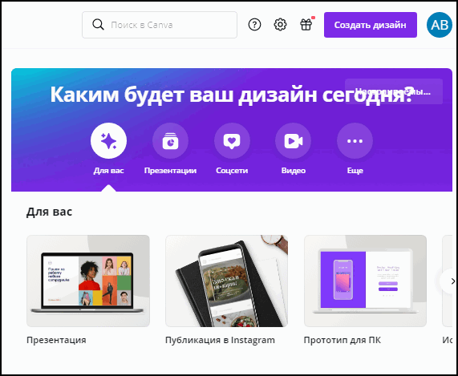
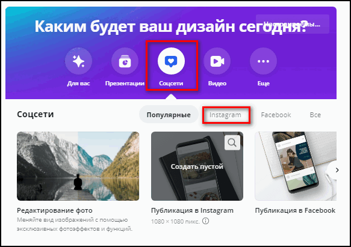
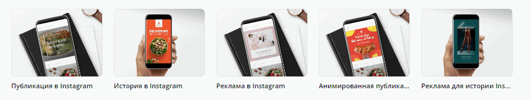
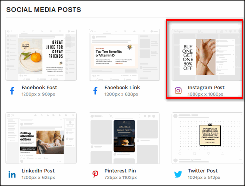
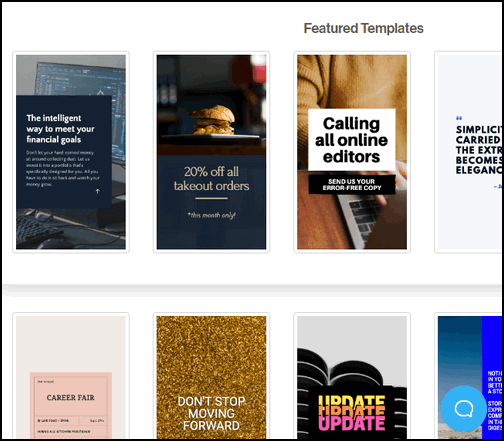
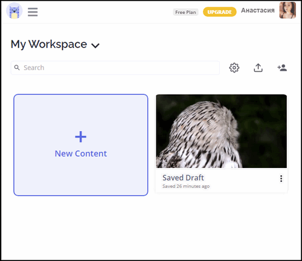
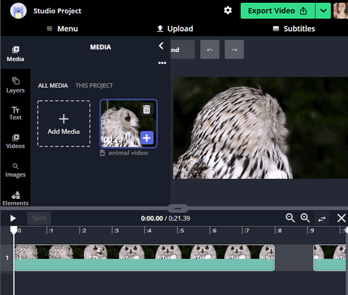

Все виды макетов в Инстаграме: инструкции и размеры

Сделать макет для рекламы в Инстаграме* возможно через инструменты редактирования фото и видео. Блогеры, маркетологи компаний и SMM-специалисты используют платные и бесплатные редакторы, чтобы создать уникальные шаблоны.
Что такое рекламный макет для Инстаграма*
Рекламный макет в Инстаграме* – это видео или фотография, которые представляют рекламу продукта, услуги. Это может быть короткий ролик для Историй или длинное видео, где автор рассказывает о преимуществах и демонстрирует их. В зависимости от того, где будет размещаться макет, выбирают три способа:
- Истории. Отдельная публикация, которая занимает от одной до нескольких Сторис;
- лента. Отдельный пост с фотографией или каруселью, который подкреплен текстовой информацией;
- IGTV или Reels. Встроенная реклама посреди клипа или отдельный короткий ролик.
С появлением раздела Reels, создавать рекламу для Инстаграма* стало проще: автор может записать тест продукта и разместить в короткие видеозаписи. Для IGTV обычно создают записи, продолжительностью более 10 минут. Поэтому рекламу вставляют ненавязчиво, ближе к середине клипа.
Фотографии в Ленте (одиночные или карусель) – стандартный формат. Если у владельца страницы есть бизнес-статус или «Автор», он может отметить рекламодателя на снимке. Сверху появится функция: «Указать партнера».
Технические требований
Макет в Инстаграме* – это не только эстетично выполненная фотография или видеозапись, а и технические требования. При отправке на модерацию недавно созданную рекламу, рекламодатель может получить отказ. Технические параметры относительно рекламы в Instagram*:
|
Stories |
|
| Формат: | От 1:91 до 4:5 |
| Тип файлов: | MP4, MOV, JPG или PNG |
| Продолжительность: | До 120 секунд (клип), картинка – 5 секунд |
| Размеры: | Рекомендуемое: 1080 на 1920, минимальное: 600х1067 |
|
Лента |
|
| Подпись | 2200 символов |
| Формат: | Квадрат: мин. 600х500, макс. 1936х1936 |
| Горизонтальное: 600х315 до 1936 | |
| Вертикальное: от 600х750 | |
| Объем видеофайла | До 4 Гб |
| Продолжительность в Ленте: | До 120 секунд |
Между стандартной публикацией и рекламной есть различия в продолжительности, максимально допустимом объеме файла. Создание и загрузка рекламы возможна через сам Instagram* или Ads Manager от Facebook*, который включает все необходимые настройки для продвижения и больше направлен на таргетинг.
Основные критерии создания макета
Кроме того, что макет для таргета в Инстаграме* должен отвечать техническим критериям, есть правила оформления. Они нужны для создания эффективного рекламного предложения и привлечения потенциальных клиентов/подписчиков. Каким требованиям нужно следовать:
- полная информация о продукте/услуге. Посетителю не нужно искать дополнительные сведения на сайте, писать менеджеру;
- цена указана сразу. Любой магазин, где есть актуальные предложения, указывает цену сразу. Такие же правила оформления работают и в социальной сети;
- картинка или видео, отвечающие по смыслу;
- отзывы. Их можно использовать в рекламной макете, вставив в середине клипа или в начале;
- негромкое музыкальное сопровождение. Многие пользователи либо не успевают отключить звук, либо видео запускается автоматически. Поэтому предупреждение о громком звуке положительно повлияет на посещаемость страницы, как показатель заботы о клиенте;
- неяркие оттенки. Времена, когда красная надпись с пометкой: «Акция» была актуальна – уже прошли;
- качество съемки и звука. Приятнее наблюдать рекламу, которая качественно снята, особое внимание занимают сюжетные ролики.
К неглавным правилам рекламы можно отнести и «уникальное предложение», «индивидуальный выбор продукции». И речь не о стандартной фразе «индивидуальный подход», а о разнообразии продуктов, которые были продемонстрированы в коротком видео или фотографии. Это может быть: расцветка, добавление услуг или функций. То есть, выбор для будущего покупателя и современный подход в решению проблемы «индивидуальности».
5 лучших приложений
Приложения для создания макетов включают: профессиональные инструменты (где можно создать макет не только для личного бренда, но и компании) и пользовательские (направленные больше на минимальную обработку видео и добавление текста на уже готовые изображения). Мобильные приложения для создания рекламных макетов:
- InShot. Видеоредактор, где можно создать небольшой видеопроект, слайдшоу;
- Mojo. Заранее готовые шаблоны для работы с фото и видеоматериалами;
- PicsArt (аналог Photoshop на смартфоне). Каталог стикеров, холсты и стоковые картинки;
- Instories. Шаблоны для Историй в Инстаграме*, которые в дальнейшем можно использовать для рекламы;
- Анимированные Stories. Видео-макеты для рекламы и обычных Сторис.
Более профессиональные – компьютерные версии, где авторам предложены новые фильтры, эффекты, анимация для текста и каталоги макетов.
ТОП-3 сервиса по созданию макетов
Визуальное оформление макета для постов в Инстаграме* играет значимую роль в принятии клиентом решения. Если это качественно выполненная картинка или запись – она не останется без внимания, даже если заказов будет меньше запланированного. Это еще один вариант, как получить больше аудитории и среди них уже привлечь новых клиентов.
Canva: видео и фото
Макет страницы в Инстаграме* пользователю будет проще всего создавать с помощью Canva. Сервис направлен на работу с публикациями в социальных сетях, а также создание типографии для последующей печати.

Для Instagram* представлены такие варианты:- обложки для Актуального (Highlight);
- шаблоны для Историй и рекламы;
- публикации в Ленту;
- видео и подготовленный каталог музыки без авторского права;
- аватарки.
В сервисе каждый пункт добавлен отдельно и с помощью поиска (или соответствующей вкладки Instagram*) можно отыскать макеты. Чтобы пользователь самостоятельно не подбирал разрешение – оно заранее установлено для выбранного раздела.
Как сделать рекламный макет с помощью Canva:
- Зайти в сервис – авторизоваться с помощью страницы в одной из социальных сетей или создать учетную запись.

- Нажать сверху: «Социальные сети» - в фильтре «Популярное» - Instagram*.
- Выбрать раздел: «Реклама в публикации» или «Истории».
- Выбрать шаблон и отредактировать.
- Нажав по кнопке «Сохранить», выбрать подходящий формат.

Canva предлагает список стоковых изображений и регулярно обновляемый каталог стикеров, шрифтов. При необходимости, можно анимировать созданную картинку, добавить GIF-наклейку или просто указав это перед сохранением.Snappa: новый функционал
Snappa – недавно появившийся и полностью англоязычный сервис, подойдет для создания макета Ленты в Инстаграме* и других задач при продвижении. Регистрация доступна только по адресу электронной почты, на которую придет подтверждение. Для Instagram* в сервисе есть всего 2 раздела: Истории и Публикации, но их достаточно для создания рекламного шаблона. Как воспользоваться:
- Открыть Snappa – перейти в раздел: «Начать бесплатно».
- Создать учетную запись и подтвердить – перейти к доступным шаблонам.

- Instagram* Post – выбрать макет и отредактировать.
- Нажать по кнопке: «Download» - указать формат изображения, в котором оно будет отправлено на устройство.

В сравнении с Canva, Snappa уступает в объеме каталога картинок и графических объектов. Также, функционал менее интуитивен, но большая часть шаблонов – доступны бесплатно.
Сервис подойдет для небольших рекламных кампаний, где ставка сделана не на оформление, а текстовую составляющую. В остальном, инструменты для редактирования включают: редактирование снимка, текст и стандартный список иконок, который можно добавить на холст.
Kapwing: для создания видео и гифок
Kapwing полезен авторам, которые предпочитают работать с видеоформатом. Сервис поддерживает авторизацию с помощью Google, поэтому можно не создавать отдельно учетную запись. На главном экране сразу появится иконка: «Создать новый проект» и возможность загрузки своего видео. Но доступно создание клипа с помощью стоковых материалов:
- Зайти в сервис – авторизоваться.
- Нажать: «Создать новый проект» - на боковой панели «Video».

- Выбрать любой клип – на таймлайне будет показана продолжительность.
- Использовать инструмент «Разделить» или «Обрезать», чтобы выбрать нужный фрагмент.
- Перейти к эффектам и тексту, чтобы добавить информацию.

- Export Video – указать формат.
Сервис поддерживает несколько слоев: достаточно переместить второй клип на слой ниже. Стоковые клипы можно редактировать, добавлять музыкальное сопровождение. Недостаток в том, что заранее подготовленных шаблонов для Инстаграма* нет, поэтому автор придется самостоятельно обрезать видеозапись. При этом, в разделе «Коллекции», можно найти рамки для видеоклипов в Инстаграм* и уже там есть заранее подготовленные размеры.
Почему Инстаграм* не пропускает макет
Макет страницы в Инстаграме* должен отвечать еще и требованиям сообщества. Модерация не пропустит видеоклип или изображение, которое призывает к дискриминации, насилию. Причем, рамки допустимого неоднозначны. Запрещены:
- изображения с фетшеймингом (ненависть к людям с излишним весом). Реклама, где использованы фотографии человека «до» и «после» не пропустят;
- призывы к получению денег с помощью конкурсов, игровых автоматов. Даже игровые тематики, как «коробки с бонусом» недопустимы;
- шутки, связанные с дискриминацией и расизмом.
Причины, почему рекламный макет не пропустили:
- не подходит по техническим параметрам;
- пользователь неправильно заполнил поля или вовсе оставил пустыми. Тот же раздел «Аудитория» или «Места размещения»;
- использование чужого интеллектуального труда. На видео или картинке стоит вотемарка, которая не принадлежит рекламодателю;
- крупные значки брендов;
- упоминание Инстаграм*.
При добавлении рекламного макета пользователь должен следить за тем, чтобы на картинке не было логотипов. Чтобы добавить ссылку на свой сайт или сторонний ресурс – нужно использовать инструмент URL или указать это в «Конечная цель».